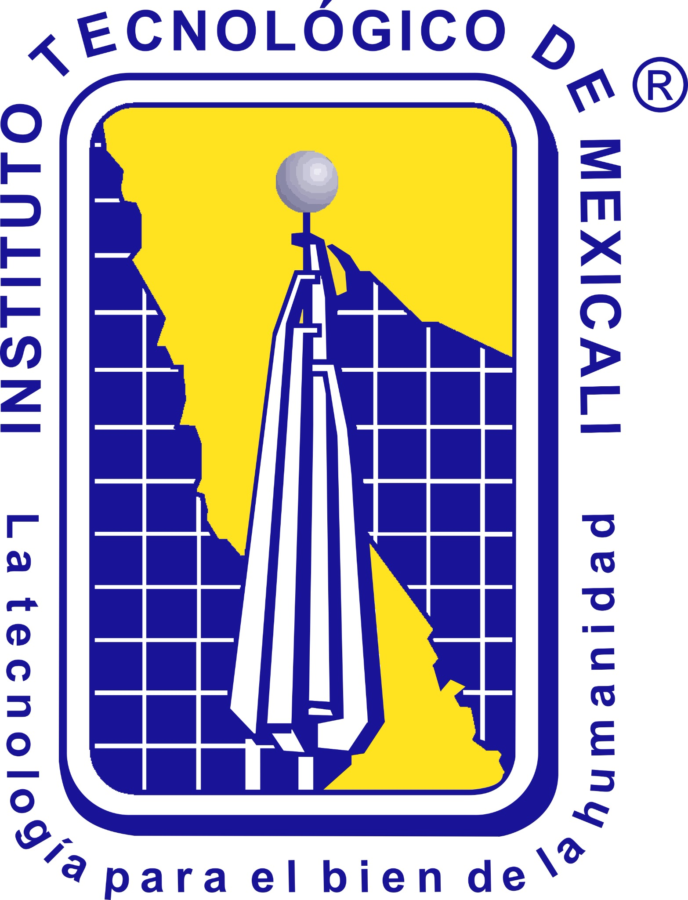

Lote
160 dadosLeadframeDIE ATTACH TRAINER
Etapa ATP 4Dispensado, alineación, colocación y curado del dado
de Nogales

Instituto Tecnológicode Mexicali
LOTE ATP-DA-001 · Leadframe · Epóxico conductivo
INSPECT Curado
Receta
88/1000.430 µL configuradosSeguridad
0/8Verificación pendientePASO 1
Lote y geometría
PASO 2
Soporte y método de unión
PASO 3
Receta de colocación y curado
Volumen geométrico recomendado0.425 µLÁrea del dado × bondline × factor de extensión
Corrección de visión
88Compatibilidad
de receta
de receta
Volumen 101% del objetivoGeometría compatible
Parámetros dentro de la ventana didáctica.
Epóxico conductivo · Bondline 20–65 µm · Fuerza 0.5–3 N · Curado 110–180 °CPASO 4
Interlocks y operación
8 verificaciones pendientesComprueba y marca cada punto.
La geometría debe ser compatible para iniciar.
PREVISUALIZACIÓN
Estación y ensamble
ESTACIÓN DA-04 VISIÓN TÉRMICO
VAC
DISP
Si●
VACÍO PICK55 kPa
FUERZA Z0.0 N
X / Y0 / 0 µm
TEMPERATURA35 °C
ObjetivoObtener posición, cobertura, bondline y curado repetibles sin contaminar las áreas de wire bonding.